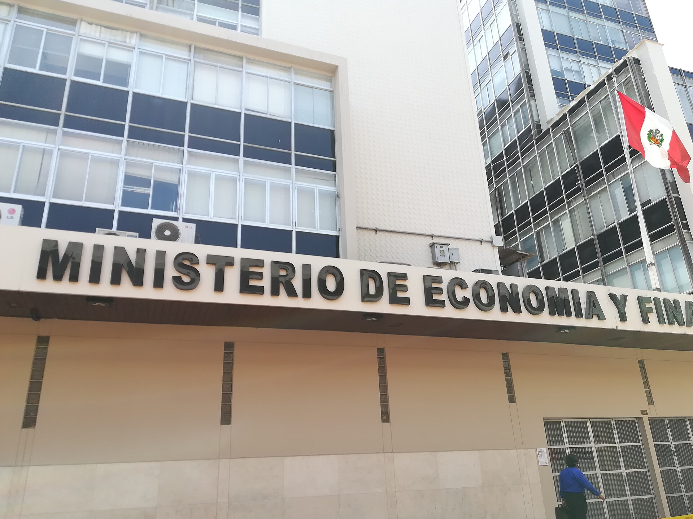
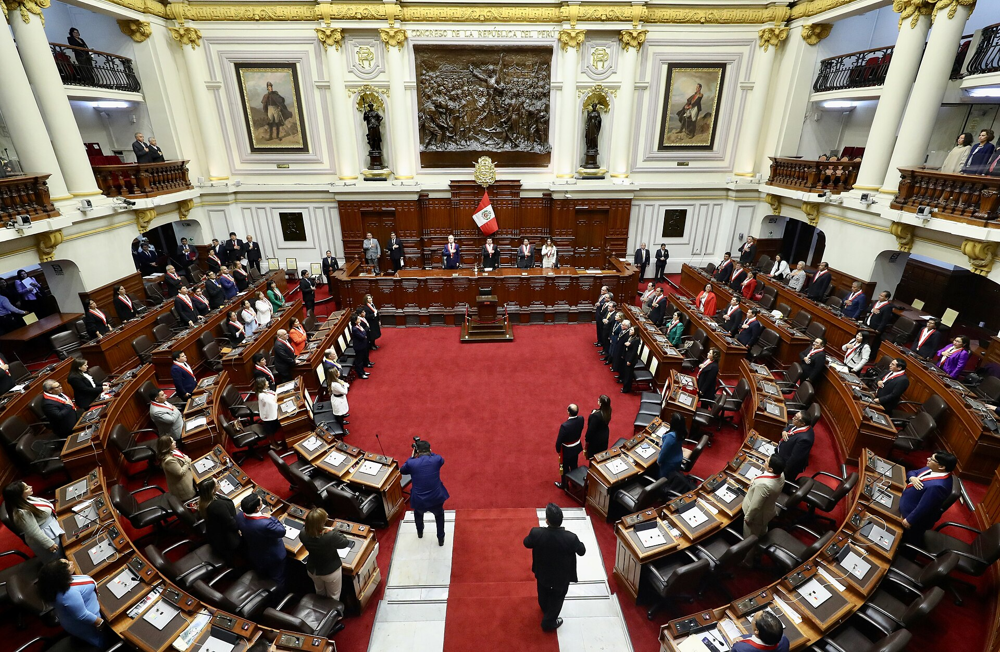

Semana del 28 oct al 4 nov
Senado: aprobado
Nuevas reglas para elegir al Tribunal Constitucional
Los candidatos se califican sobre 100 puntos: 70 por currículo y 30 por entrevista
38


 12
12
12
Comisión de Presupuesto: en debate
Presupuesto 2027: S/ 266.506 millones
Es 3,5% más que en 2026, pero la inversión pública cae 1,8%
Senado: aprobado
Se prorrogan los estados de emergencia
Rigen en los penales de alta peligrosidad, en Piura, Sullana, Paita y Talara, y en el VRAEM
3713
13
Diputados: aprobado
Diputados reforman la ley de enfermería
La reconoce como profesión autónoma dentro de sus competencias
118 0
0
0Las más reñidas
Ver todasCrear una comisión especial para prevenir conflictos sociales
26 a 26Segunda conclusión del informe final de la denuncia constitucional 12 (antes 403), en el extremo que propone acusar al exministro de defensa walter edison ayala gonzales, por la presunta comisión de los delitos de abuso de autoridad (artículo 376 del Código Penal), cohecho activo genérico (artículo 397 del Código Penal) y tráfico de influencias agravado (artículo 400 del Código Penal), al haber actuado como intermediario y gestor de los intereses ilícitos del presidente y de terceros,vulnerando sus deberes funcionales. asimismo, la propuesta para el levantamiento del fuero del acusado para que el Ministerio Público proceda conformea sus atribuciones respecto a los delitos funcionales identificados
52 a 45Primera conclusión del informe final de la denuncia constitucional 12 (antes 403), que propone acusar por la presunta comisión de los delitos de patrocinio ilegal(artículo 385 del Código Penal), abuso de autoridad (artículo 376 del Código Penal) y cohecho pasivo propio (artículo 393 del Código Penal) al haberse acreditado que se instrumentalizó su cargo para vender ascensos y favorecer indebidamente a terceros, conducta que se subsume plenamente en estos tipos penales funcionales, que enervan la presunción constitucional de inocencia de josé pedro castillo terrones
52 a 43Debatir la interpelación al ministro del Interior, César Astudillo
50 a 65
Así votan las bancadas
Ver bancadasFuerza Popular
100%cohesión81%asistenciaJuntos por el Perú
95%cohesión92%asistenciaPartido del Buen Gobierno
98%cohesión87%asistenciaRenovación Popular
99%cohesión82%asistenciaPartido Cívico Obras
94%cohesión90%asistenciaAhora Nación
89%cohesión88%asistenciaCohesión: qué tan seguido sus integrantes votan igual que la mayoría de su bancada.
Últimas votaciones
Ver las 90
Texto sustitutorio de la moción de orden del día 12, mediante la cual propone que el Senado de la República constituya una comisión especial de pueblos indígenas u originarios, comunidades campesinas y nativas y pueblo
17, que autoriza el ingreso y tránsito de una unidad naval y de personal militar de la República de corea con armas de guerra al territorio de la República del Perú
Acuerdo del Senado de la República que aprueba la prórroga del plazo del estado de emergencia establecido mediante el Decreto supremo 132-2026-pcm, solicitado por la presidencia de la República
22, que autoriza a la señora presidenta de la República para salir del territorio nacional del 15 al 21 de noviembre de 2026
Proposiciones legislativas 13, 17, 477, 540 y 612, que proponen modificar el Decreto legislativo 1373, decreto legislativo sobre extinción de dominio, para restablecer la autonomía del proceso y fortalecer sus garantías
Informe de calificación y un plazo de 15 días hábiles para que la comisión de acusaciones constitucionales realice la investigación y presente su informe final
Iniciativas nuevas
Ver las 871Fortalece a susalud para garantizar la protección oportuna y efectiva de los derechos de los pacientesPresentadaPromueve la articulación y el fortalecimiento de las escuelas de campo y de capacitación agropecuaria en el PerúPresentadaGarantiza la entrega directa de los recursos del canon a los institutos y escuelas de educación superior públicosPresentadaIncorpora el numeral 100.15 al artículo 100 y el artículo 100-A y 100-B a la Ley 30220, Ley Universitaria, para reconocer el derecho del estudiante a contratar una pensión de enseñanza y tasas administrativas fijas en las universidades privadasPresentadaIncorpora disposiciones en la Ley 30364, ley para prevenir, sancionar y erradicar la violencia contra las mujeres y los integrantes del grupo familiar, para proteger a las víctimas frente a las amenazas y el maltrato contra sus animales de compañíaPresentada